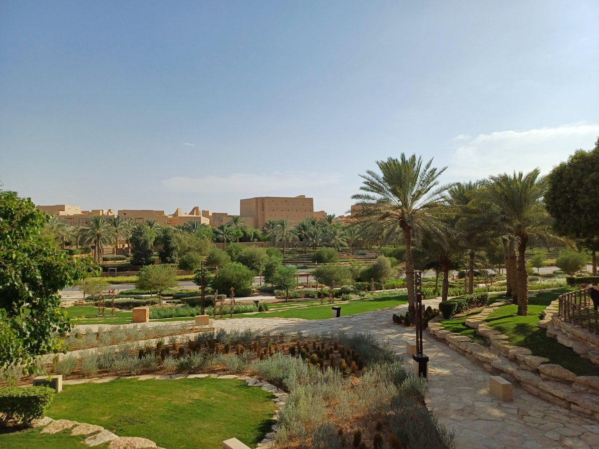
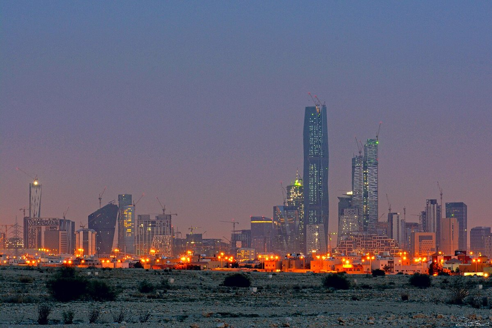
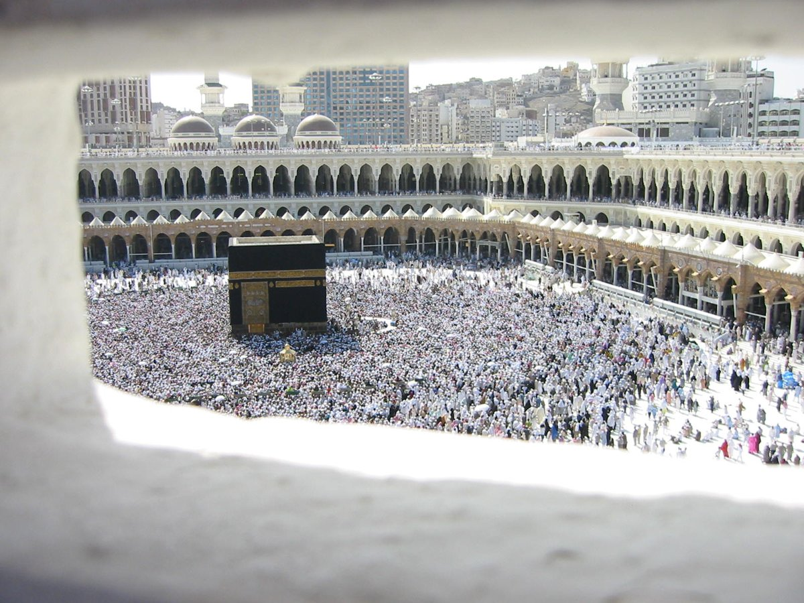
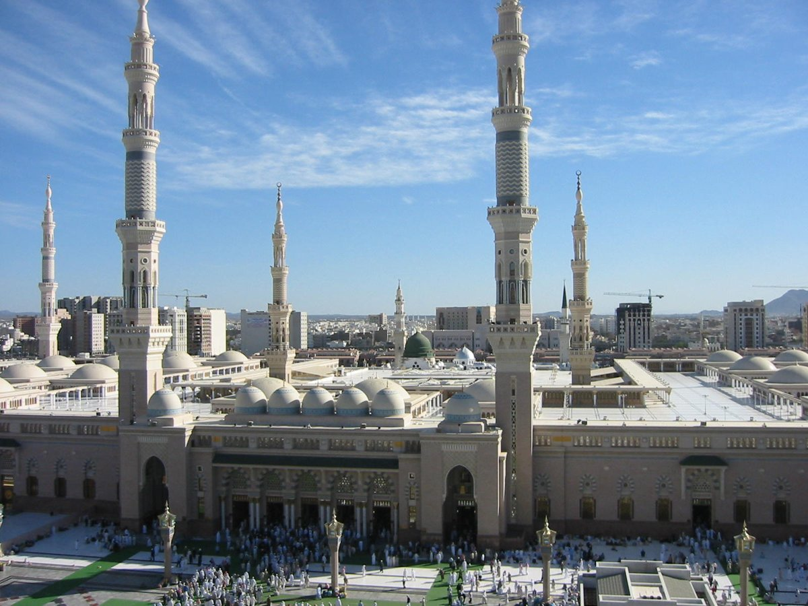
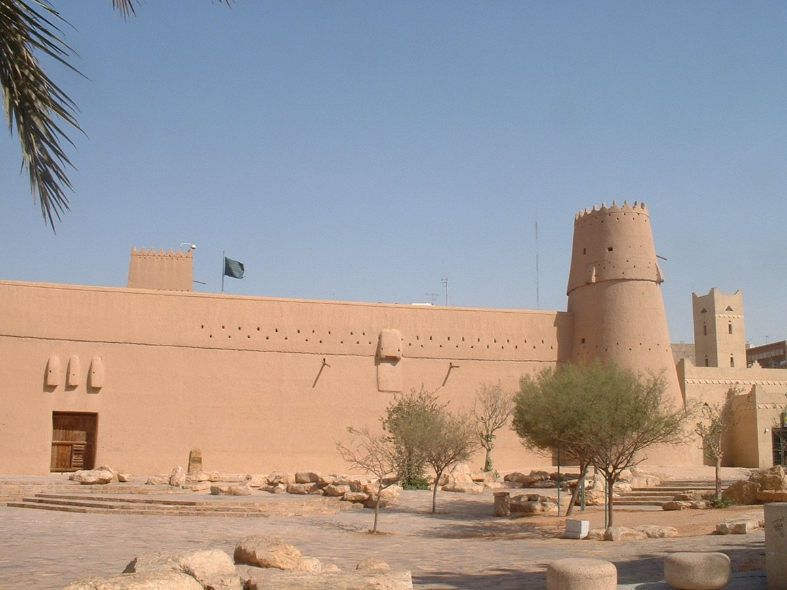
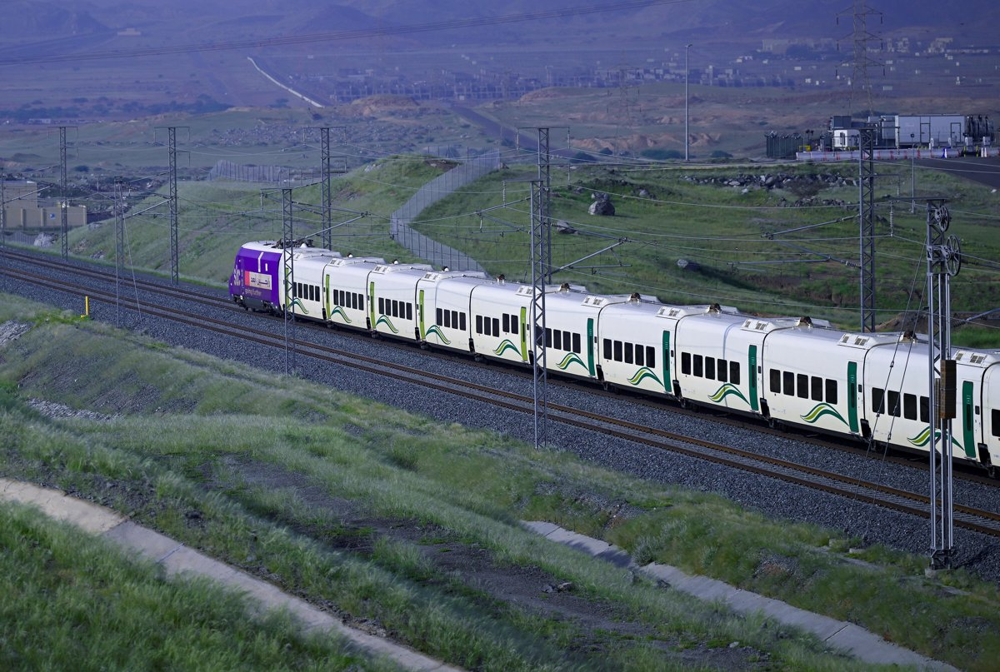

عمارة تراثيةبيوت تحكي قصص الأجداد
بُنيت كثير من البيوت في نجد قديمًا بالطين. وما زالت الدرعية تحفظ لنا نماذج من هذا التراث.
صورة لحي الطريف في الدرعية، عام ٢٠٢٤م؛ صورة حديثة لمعمار تراثي.صور تحكي عن ماضينا، ومعالم نعتز بها، وإنجازات نفخر بها. هيا نتعلم ثم نختبر معلوماتنا!

تطورت الحياة في وطننا، وما زلنا نعتز بتراثنا. انظر إلى الصورتين: ماذا تلاحظ؟

عمارة تراثيةبُنيت كثير من البيوت في نجد قديمًا بالطين. وما زالت الدرعية تحفظ لنا نماذج من هذا التراث.
صورة لحي الطريف في الدرعية، عام ٢٠٢٤م؛ صورة حديثة لمعمار تراثي.نرى اليوم في مدننا مباني حديثة وطرقًا واسعة وخدمات كثيرة تساعد الناس في حياتهم.
مركز الملك عبدالله المالي في الرياض أثناء الإنشاء، عام ٢٠١٥م.فكّر وتحدث: ما الفرق بين شكل البيوت في الصورتين؟ وماذا تحب في كل منهما؟
استخدم الناس الإبل في السفر قديمًا. واليوم نسافر بالسيارات والطائرات والقطارات.
تعلم الأطفال قديمًا في الكتاتيب. واليوم نتعلم في المدارس، ونستخدم الكتب والأجهزة.
كانت الرسائل تحتاج وقتًا لتصل. واليوم تساعدنا الهواتف على التواصل بسرعة.
تعرّف إلى المعلم ومدينته، ثم افتح البطاقة لتقرأ حكايته.

فيه الكعبة المشرفة، قبلة المسلمين في صلاتهم. ويأتي إليه المسلمون لأداء الحج والعمرة.

بنى النبي محمد ﷺ هذا المسجد بعد هجرته إلى المدينة المنورة. ويزوره المسلمون للصلاة فيه.

معلم تاريخي في الرياض، ارتبط باسترداد الملك عبدالعزيز للرياض. تساعدنا زيارته على التعرف إلى تاريخ وطننا.
كانت الدرعية عاصمة الدولة السعودية الأولى. وتتميز بمبانيها الطينية وتراثها العريق.
تأسست الدولة السعودية الأولى على يد الإمام محمد بن سعود، وكانت عاصمتها الدرعية.
وحّد الملك عبدالعزيز المملكة العربية السعودية، وأُعلن اسمها في ٢٣ سبتمبر ١٩٣٢م.
نواصل تطوير وطننا، ونحافظ على تراثه، ونجتهد في دراستنا لنشارك في مستقبله.
نتذكر تأسيس الدولة السعودية في يوم التأسيس: ٢٢ فبراير، وتوحيد المملكة في اليوم الوطني: ٢٣ سبتمبر.

يربط مكة المكرمة بالمدينة المنورة مرورًا بجدة، ويسهّل تنقل المسافرين.
تعتني المملكة بالحرمين الشريفين، وتقدم خدمات تساعد الحجاج والمعتمرين.
في وطننا مدارس وجامعات للتعلم، ومستشفيات ومراكز صحية للعناية بالناس.
١٠ أسئلة من رحلتنا. خذ وقتك، وتعلم من كل إجابة.
أحافظ على نظافة الأماكن العامة، وأحترم الآخرين، وأجتهد في التعلم.